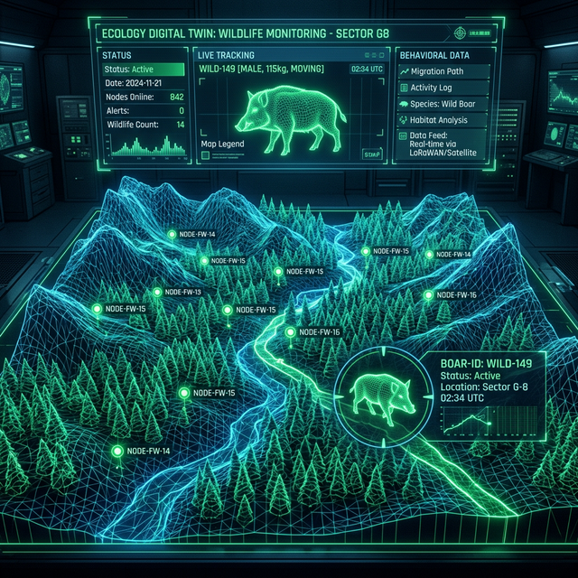

FUTの学生諸君へ
阿部研究室で、未来の「あたりまえ」を一緒に創りませんか？
私たちの研究室は、IoTや5G/6Gといった最先端のネットワーク技術を武器に、社会をより便利に、より面白くすることを目指しています。
技術を学ぶだけでなく、実際に手を動かしてシステムをデザイン・構築・評価する、実学を重視する研究室です。
社会の課題を、テクノロジーで解決する。
阿部研究室では、企業との共同研究や自治体との地域連携プロジェクトを積極的に実施したり、地域課題の解決をテーマにした研究を進めたりしています。
害獣問題、宿泊施設の無人化、次世代通信インフラなど、実社会の切実な課題に正面から向き合い、役立つシステムを世に送り出すことを目指しています。
ワクワクする卒研テーマがいっぱい！
モバイルネットワーク × 性能向上
5G/6Gの性能を限界まで引き出すための新しいプロトコルや制御手法を考えます。

デジタルツイン × 害獣対策
センサーと仮想空間を繋ぎ、地域社会の深刻な課題にテクノロジーで挑みます。
IoT統合制御 × スマート民泊
IoT技術で新しい宿泊体験をデザインし、無人管理システムの可能性を追求します。
生成AI × 複雑系シミュレーター
最新のAIを活用し、これまでにない高度なシミュレーション手法を検討します。
「こんなことがやりたい！」という持ち込みテーマも大歓迎。
情報系であれば、ネットワークの枠を超えて興味をとことん追求できる環境です。
数字で見る阿部研究室
研究室のリアルな姿を、卒業生たちの評価から可視化してみました。
自分自身の成長実感（1-5評価）
研究室全体の満足度（1-5評価）
卒業生が入って良かったと感じたこと
生徒の自主性を重んじる研究室
非常に居心地がよかった
軽い感じで雑談を先生に振れる雰囲気の良い研究室
楽しい研究室でした
先生、所属する学生ともに個性がある集団
楽しくて居心地が良い研究室
どのような学生が向いている？（卒業生の声）
物事を調べる力がある学生
根気強い人、情報分野に興味がある人
真面目に努力できる人
プレッシャーに強く、土壇場で底力を出せる人
IoTに関心がある人、IoTで生活を改善したい人
研究室に来るのが好きな学生
担当講義・科目
現在担当している主な科目
ネットワークシステム論
ネットワークの基礎から最新技術まで幅広く学びます。
コンピュータアーキテクチャ
コンピュータの構造と動作原理を学びます。
経営情報実践学演習
社会や地域問題を取り上げ、IoTシステムを活用することで解決策を提案するPBL科目です。
これまでの担当科目・関連科目
見学・相談はいつでもOK！
研究室の雰囲気を見たい、卒研の話を聞きたい学生は、お気軽にTeamsで阿部まで連絡してください。
※学内限定の案内です。とことん研究を楽しみたい学生を待っています！